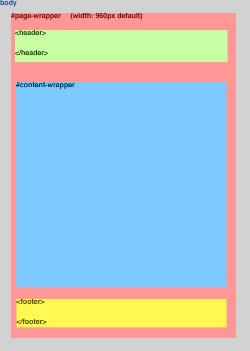

Normal Text
Not Tested
Haven't done
Incomplete
Introduction
Hey everyone! Thanks for downloading Boiler Plate Plus+PHP. In here you'll find pretty much all you'll need for your next project. If you're unfamiliar with boiler plates and how they work I suggest you read from top to bottom. If you are familiar with boiler plates take some time to read up on the best practices. Enjoy! TOPPhilosophy
The following are some badass tips I've read and learned from other programmers that help you get things done right the FIRST time and done in a much more efficient way! I highly recommend printing out the following list and placing it on your desk or wall as a reminder during the project...as we all know it's very easy to slip into autopilot when the deadline is coming up soon, but trust me on this, these best practices will help you get things done faster, smarter, and with cleaner code! TOPWhat's included
Here's a list of what's included in this boiler plate with a description| File Name | Description |
|---|---|
| makefile | This make file runs when a user types makeinto the command line while in the base directory. Take a look at the make file and you'll see there are other options. (dev, staging, zip). Although you can simply run a make, there is an option to be more specific and send in an argument such as make zipor make stagingCurrent options are dev staging zip build In dev and staging a build folder will be recreated. When selecting build, there will be no interaction with the server. |
| index.php |
Index.php should be used as a simple template. It includes the base requirements for a php page in this boilerplate to run efficiently. Note the variables at the top.
$body_ID = "bodyID";
$JS_Files = "file1.js file2.js file3.js";
$CSS_Files = "file1.css file2.css";
|
| config.ini | This file should be the only configuration file edited. It contains the main settings for the creation of a build and a deployment. |
| deploy.pl | prompt.pl | Deploy and Prompt are two Perl scripts that help create a build or a deploy. They should not be edited unless you understand Perl. In order for these scripts to run efficiently, you will need Perl installed (comes on MAC OSX) and an extra module called Config::Simple. To get this mod please see the requirements section. |
| base.css | This file contains an HTML5 reset as well as some great base classes. This file should be the first css file run for each page load. |
| global.css|js | The global css file is blank and should be treated as a css file that will appear on every page. To see more about formatting and best css practices, checkout the CSS section of this document. The global js file is NOT blank and contains a defined structure known as the Module Pattern. This helps keep code from clashing. To read more about Javascript formatting and best practices please read the Javascript section. |
| img directory | An img directory is included for storing images. During a build, this entire folder will be copied over with no (for now) compression. For best practices, there is a global directory which should contain images used on multiple pages. For images used on a single page, make a directory named after the page name. For example, stats.php should have an image folder at ./img/stats/ |
| overlays directory | colorbox | Included is an overlays directory. This directory should hold all of the html (no php yet) files that will be used by the colorbox plugin. |
| includes directory | The includes directory should hold all of the php included files such as header and footer. |
| plugins directory | Inside the js and css directory are directories named plugins. These directories will hold downloaded files (plugins) to help your project. The css plugins directory comes with the latest colorbox.csswhile the js plugins directory comes with the latest jquery | colorbox.js | jquery.cycle.all.js | jquery.modernizr-x.x.x.js |
Build Intro
Boiler Plate Plus+ contains a couple of build scripts that help you do many things such as:Build Requirements
In order to run these builds you'll need to have the following:| Requirement | Description |
|---|---|
| Web Server | You will need a running Web Server in order for the build script to run the following commands:make staging | make devNote that the only action the makefile can take without a Web Server is make zip |
| Perl | This build uses Perl to execute. You do not need to know Perl to run a build, but you must have it installed. If you are running Mac OSX Perl should already be installed. To check run the following in the Terminal:perl -v |
| Config::Simple Module (Perl) | The simple config is a module used by Perl which lets the build script use the Configuration file (config.ini). This module is not installed by default, but is rather easy to install. Use the following commands to install Config::Simple |
Build Config
Boiler Plate Plus+ comes with a configuration file called config.ini which lets important variables be set to a users preference. This is the layout with descriptions of each listed with the defaults:
[GLOBAL]
perms = "755" ;The permissions given to the build directory
dev = "dev-server" ;Address of the dev server
staging = "staging" ;Address of the staging server
assets = "img overlays" ;List of assets that need to be transferred over (excludes js, css, php)
build_folder_name = "build" ;Name of the build folder
web_address = "http://yoursite.local/" ;Virtual Host name for project
[CSS]
min_name = "global.min.css" ;Name for minified css file
order = "base global" ;Order css files need to be appended to minified file
;(Only list files that need to be in a particular order...
;ones left out will be appended normally)
[JS]
min_name = "global.min.js" ;Name of minified JS file
[ZIP]
name = "myproject" ;Name of zip generated by build script
append_timestamp = true ;Append a timestamp to the zip?
TOP
Build Test
Since Boiler Plate Plus+, as many other downloads, require a few files in place, you can run a quick test and make sure you're up to speed and ready to go so you get no surprises later on! Go ahead and run the following command and read the output:
make test
TOP
PHP Intro
Boiler Plate Plus+ uses PHP instead of HTML. Don't worry though, they are incredibly similar. In fact, PHP is HTML with the ability to do a few extra things. You can write a full HTML page with a .php extension and the page will still render. What PHP has a benefit over HTML in is the way it can include files and send variables around. That means no code duplication and much less code itself! All you need to know for this introduction is that any php needs to be encapsulated within php tags like this:
<?php
//php code goes here
?>
TOP
PHP Includes
Lets imagine a horrible scenario. You've made a great website. It has 100 pages exactly because you're precise like that. You wrote the code in HTML because it's familiar. The client signed off on the links at the top of the page. There will be four of them that direct the user to the main parts of the site. Well...that same client just called and now they want a new link! This means you'll have to go back through 100 pages and update the nav. Or...if you used PHP, you just have to do it once and all 100 pages will pick up the changes instantly! How does this work? It's very simple actually, just include the header part in a single file and call that same file into every page!
<?php
include_once('includes/header.php');
//or
include('includes/somemodule.html');
?>
There are two examples here. An include once and an include. This should be pretty straight forward. At any point in your html you can create the PHP tags and call in a whole section of HTML. This is commonly done for headers and footers of the page, since those stay the same globally. The main difference between include and include_once is that include will always bring in the file no matter how many times it appears on the page. include_once will only bring in the file once. If there is another call for it, it will be ignored. This helps against human error (like bringing in two headers!)
TOP
PHP Variables
PHP variables are very simple to understand. Checkout the following demo:
<?php
$variable = "value";
$boolean = true;
?>
For the most part strings and booleans will be the only things used in this project.
TOP
PHP Parameters in included files
Now that you know how to create PHP variables and include files, you're ready to combine them! But why combine? Lets look at a scenario. You have a page that needs to include a div. That div has a background color of green on 5 pages, and red on 3 pages. 99% of the HTML is the same, it's just one class name that needs to be changed (red or green). This is an easy opportunity to be lazy and create two copies of that div with the red and green class. With PHP includes and variables, you don't have to do that. Just set the color you want for the particular page using the example below: (Keep in mind echo is PHP keyword which outputs anything (string, int, boolean, to the screen))
<?php
$color = "green";
include('special-div.html');
?>
In the example above, the color variable has been set to green, and then there is a call to include a file called special-div.html. So what needs to happen in the special-div.html? It's very simple:
<div id="special" class="<?php echo $color; ?>">
<!--Content-->
</div>
The best thing to take away from this example is that even though these are two separate pages, they are eventually combined and therefore the PHP variables can been seen by both.
TOP
HTML Formatting
This section covers the HTML formatting commonly used front end projects. Although you have the flexibility to alter the pages any which way you'd like, this wouldn't be a true boiler plate if it didn't set you off in the right direction! Here's a rundown of the code with a visual to make some sense of what you're getting.  TOPHTML Best Practices
There are a few simple practices you should adopt to make your project easier down the line. These are pretty simple, but can get over looked. I tried my best to force these good practices with my structure of this boiler plate:| Practice | Description |
|---|---|
| Body ID | Every page should have a body ID unique to the respective page. This helps encapsulate your code from a CSS point of view allowing specific rule targeting for specific pages. This rule also applies to Javascript to help determine if a block of code should be run based on conditionals. |
| ID/Class Names | Personally I admit to being incredibly lazy with defining good ID's and classnames. It's very easy to focus on the code you're writing and skip some of the semantics, but I can tell you from experience and general knowledge...take the time to come up with semantically great class names that can give someone completely unfamiliar with your project a clear understanding of what a specific block of code is supposed to do. In fact, a great tip is to layout the page on paper before you start coding and use ID's/classnames to help give you a better idea of what to expect for your page. Never give style-related names to classes or ID. As an example, calling a class 'red-error' for a block of text is never a good idea although it may seem like it at the time. What happens if the client comes back and says they want to change the color to black...or pink...or God forbid GREEN. Choose a name more generic like class="error-text" |
CSS Best Practices
This Boiler Plate comes with Modernizr. This allows you to use HTML5 and CSS3. What's so special about that? Modernizr will adapt your code into non-supporting browsers and prevent them from breaking. Be sure to read up on the Documentation if you haven't used Modernizr before. List out some examples of CSS selectors such as first-child, nth-child(n)???? TOPJavascript Best Practices
One of the easiest places to be lazy while writing javascript is on the naming convention. Just like naming classes and ID's in HTML, it's easy to skip ahead and go right to the code without giving much thought to semantics. The idea "I'll come back to it later" is very tempting, but the truth of the matter is... "no you won't"...and if you do, you'll probably be rushing through at the end wishing you had taken the time to figure out the semantics earlier because even for you it's starting to become difficult to evaluate what function or variable is used for. TOPJavascript Module Pattern
The Boiler Plate javascript uses what is called the Module Pattern. You don't have to be very familiar with this pattern to use it, especially since there is already a template set up. Just make sure you understand that your code goes inside of 'methods'. The reason this pattern is used is for modularization (as the name suggests). If one module (or page) breaks, you know exactly where it happened and what code is being affected by it. This is compared to writing all the javascript in one file, having to go through a ton of code that all relates to each other, and having to figure out how to change the structure. Sometimes making a fix in one place will break another. That brings up another topic, using the module pattern helps keep a closure around variables. This is helpful because global variables are bad in any language. TOPJavascript or jQuery?
It's very easy to get comfortable with jQuery. Heck it's incredibly quick and convenient. However, that convenience comes at a small price. Speed. Go ahead and google "jquery vs javascript speed" and you'll have a wealth of information. Here are a few links that talk about it:
$ perl -v
You should get some response from Perl. If you don't, you need to install it!
$ sudo cpan
cpan shell -- CPAN exploration and modules installation (v1.9456)
Enter 'h' for help.
cpan[1]> install Config::Simple
That's the only Perl add-on needed! Lets go to our project and run a build!
$ cd /path/to/your/project
$ make test
You should see a lot of generated lines. Check in your project directory. You should see a new file called ITWORKS.zip. You just zipped your project up! Be sure to make any changes in the config.ini file located in the config directory. Once you have a web server up and running along with a ssh enabled server, you can run a deploy.